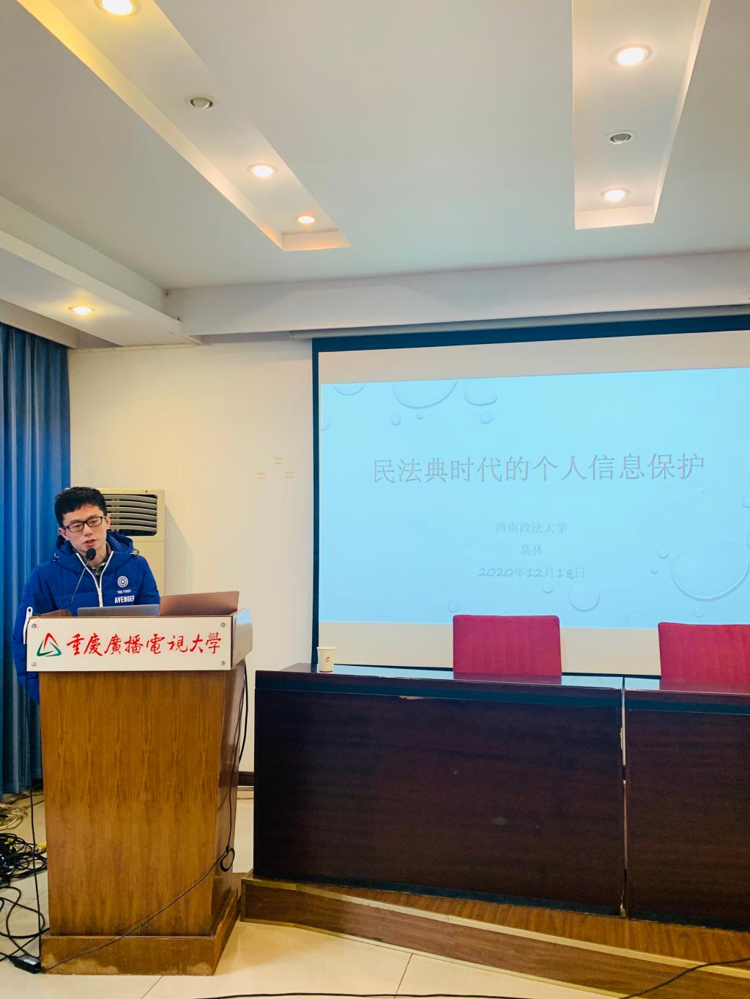
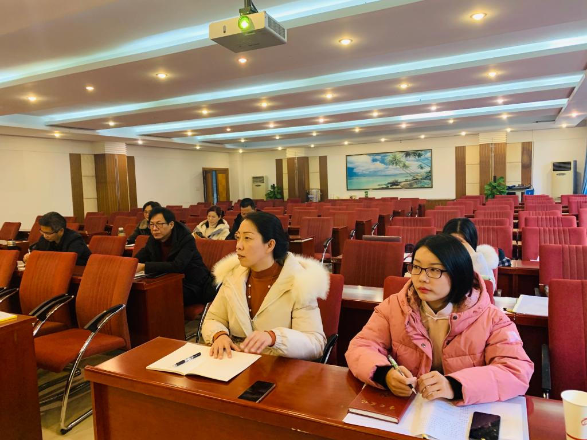

[供稿/创新教育学院]为深入学习贯彻落实党的十九届五中全会精神，加强对《民法典》的研究与宣传，深入推进政法类专业课程思政建设，12月18日，我校在华岩校区召开了法学专业教学研究中心组教研会。创新教育学院院长吴坤埔、中心组及教学团队成员参加了会议。
会上，来自西南政法大学的莫林老师围绕“民法典时代的个人信息保护”主题，从我国个人信息保护总体历程、个人信息私法保护兴起动因、个人信息保护在《民法典》中的体系位置、《民法典》对个人信息的定性等方面向与会人员进行了专题讲授。我校法学专业负责人郑瑞平教授介绍了“全国政法类专业课程思政教学方案设计大赛”的成功经验，传达了国家开放大学2021年法学专业教学工作要求，并介绍了明后年国家开放大学政法类专业各类比赛安排情况。此外，获得全国政法类专业课程思政教学方案设计大赛一等奖的凌泽涵老师也在会上分享了自己的获奖作品。
创新教育学院院长吴坤埔在会上表示，要以此次会议为契机，深入贯彻落实党的十九届五中全会精神，继续用心做好立德树人工作，强化学科建设和教学科研工作，以“质量”为准绳，建设高质量教学资源，搭建高质量教学团队，扎实做好课程思政建设，努力实践好“立德树人”的根本任务，在开放教育建设中彰显新担当、展示新作为、作出新贡献。

